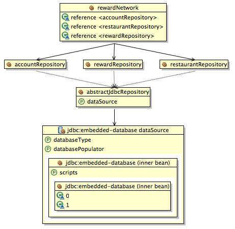
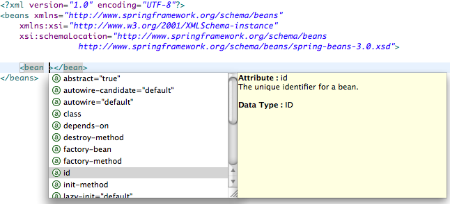
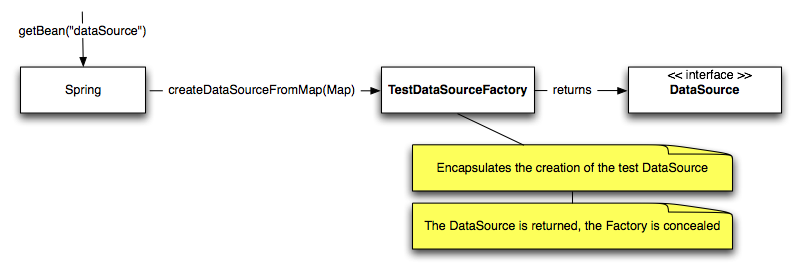
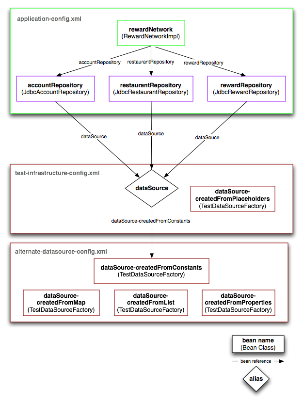

In this lab you will gain experience with features of Spring's bean container commonly used to simplify application configuration.
What you will learn:
Techniques for reducing the amount of Spring configuration code
How to import XML namespaces
How to use the <util:/> namespace to simplify common configuration tasks
Specific subjects you will gain experience with:
Bean Definition Inheritance
Importing Configuration Files
XML Schema (XSD) Namespaces
Lazy Initialization
Factory method
Bean aliasing
Estimated time to complete: 30 minutes
Spring provides several features that help you reduce the amount of application configuration code. In this section you'll gain experience with one of them called bean definition inheritance.
Bean definition inheritance is useful when you have several beans that should be configured the same way. It lets you define the shared configuration once, then have each bean inherit it.
In the rewards application, there is a case where bean definition
inheritance makes sense. Recall there are three JDBC-based repositories,
and each repository needs the same dataSource. In
this section, you'll use bean definition inheritance to reduce the
amount of repository configuration code.
In this step, you'll define an abstract bean that centralizes
the configuration of the dataSource needed by each
JDBC-based repository.
Inside src/main/java within the
rewards.internal package find
application-config.xml. Open it. Note how the
property tag instructing Spring to set the
dataSource is currently duplicated for each
repository.
Now in application-config.xml, create an
abstract bean named abstractJdbcRepository that
centralizes the dataSource configuration. Once
you've done this, move on to the next step!
In this step you'll update each repository bean to extend from
your abstractJdbcRepository to inherent its
configuration.
In application-config.xml, update each
repository bean so it extends from your
abstractJdbcRepository, then clean up the bean
definition to remove the duplication.
![[Tip]](images/tip.png) | Tip |
|---|---|
| You can now in-line the bean tag defining each repository to save a line of code. |
When you're done, move on to the next step!
In this step you'll see how the changes you made effect the graph of your application configuration.
In the Spring Beans view for the
container-3-start project, graph the
systemTest config set. It should look like
this:
|  |
Figure 1: The updated rewards application 'systemTest' config set
When you see the equivalent of Figure 1, move on to the next step!
In this last step you will re-run your
RewardNetworkTests to verify your configuration
changes don't break your application.
Run RewardNetworkTests located within the
rewards package of your test tree. When you see
green, you have just verified your application still works with your
changes and you've completed this section. Good job!
Using the <import/> tag is often a good
idea when working with multiple configuration files. In this section you
will refactor your configurations to use this tag and see the strengths
of this technique.
Open RewardNetworkTests. Note how all the
configuration files required to run the system test are listed in this
file. Now suppose you added another configuration file. You would have
to update your test code to accommodate this change. Now consider a
production web environment. In that environment you'd also have to
update your web.xml file any time the structure
of your application configuration changed.
The import tag allows you to create a single 'master' configuration file for each environment that imports everything else. This technique can simplify the code needed to bootstrap your application and better insulate you from changes in your application configuration structure.
In this step you will refactor your system test to include a single 'master' configuration file that imports everything else.
To get started first rename the
test-infrastructure-config.xml file to
system-test-configuration.xml indicating that
this file will fully define the configuration needed to run the system
test. Update your test to include only this file.
Now use the <import/> tag to import the
application configuration. Re-run
RewardNetworkTests to verify your configuration
changes don't break your application. When you see green, you have
verified your application works with your improved configuration
design. Move on to the next section.
So far you have defined your entire application configuration using a simple XML-based bean definition language. With this language, you have already achieved a lot. You've configured Spring to:
Create and configure your application components
Delegate to custom factories to create application components (FactoryBean)
Perform bean lifecycle callbacks (InitializingBean, DisposableBean)
Invoke special beans that add in custom configuration behaviors (BeanFactoryPostProcessor, BeanPostProcessor)
To do this, you imported Spring's generic bean definition language for each configuration file you defined:
|  |
Figure 2: The core bean definition language imported from
spring-beans-3.0.xsd
Now, Spring also provides several higher-level
domain-specific languages that build on its generic
bean definition language to further simplify common configuration tasks.
Each language is defined by its own XML schema with its own namespace
you may import. In this section, you'll learn how to import one of these
languages, <util/>, then use it to perform
useful configuration tasks.
The <util/> namespace contains tags
that offer useful configuration utilities. In this step, you'll import
the namespace and browse the new tags available to you.
Open alternate-datasource-config.xml in the
rewards.testdb.config package within
src/test/java. This is the Spring configuration
file you'll work primarily in during this section. Here over the next
few steps you'll complete several bean definitions to gain experience
with the <util/> namespace.
In alternate-datasource-config.xml you'll
see several TODOs, starting with TODO 1 that asks you to import the
<util/> namespace. You'll complete TODO 1 in
this step.
Import the <util/> namespace: In your
editor, switch to the 'Namespaces' tab and select the 'util'
namespace. Then switch back to the 'Source' tab. Notice that the
editor has added a reference to the 'util' namespace URI and XML
schema and associated the namespace URI with a
util: prefix.
When you have completed your import, test it. Hit
Ctrl+Space in your file body and look for new tags
with the util: prefix. If you see them, move on to
the next step!
In the following steps you will use the new
<util/> tags to configure four beans in
different ways. You'll go through each bean one-by-one until you've
completed them all. As you go, you'll run tests to verify you
configured each bean correctly.
First things first, run
AlternateDataSourceConfigTests. Verify all 4
test cases fail, indicating all 4 beans need completing. On to the
first bean!
In this step, you'll complete the configuration of the bean
named dataSource-createdFromList.
Complete dataSource-createdFromList (TODO 1 -
2) by firstly setting the databaseName property on
Spring's EmbeddedDatabaseFactoryBean class.
This class is part of the Spring 3.0 embedded database support. For
this particular bean, the databaseName can just be
a literal string, such as "rewards".
You now need to pass the initialization scripts into this bean
as a list. The list will be passed into the scripts
property of an inner bean of type
ResourceDatabasePopulator. The list should
contain two values which are the resource locations of the
schema.sql and test-data.sql
files (in that order). Try using the
<util:list> tag to configure the list.
When you're done, run
AlternateDataSourceConfigTests to verify the
test for this bean is now passing. You should only get 3 failures now.
When it is passing, move on to the next step!
In this step, you'll complete the configuration of the bean
named dataSource-createdFromConstants.
Complete dataSource-createdFromConstants
(TODOs 3 - 4) by injecting constant values for the properties using
<util:constant/> tags. You will see the
available constants by opening the
rewards.testdb.config.Constants class. Note
that that this bean definition still uses the
EmbeddedDatabaseFactoryBean, so the
configuration simply involves replacing the literal values for
databaseName and the scripts in
the previous step with constants from the Java class.
| Tip |
|---|---|
Note how this bean, as well as the other beans, are marked
lazy (lazy-init="true"). This keeps them from being instantiated
eagerly when the |
All done? Run
AlternateDataSourceConfigTests to verify the
test for this bean passes. You should only get 2 failures now. When
the test passes, move on to the next step!
In this step, you'll complete the configuration of the bean
named dataSource-createdFromMap.
Complete dataSource-createdFromMap (TODO 5)
by passing a java.util.Map argument to
the createDataSourceFromMap static factory
method on a special Factory class which has been created for you
called TestDataSourceFactory. You will need to
use the factory-method attribute to ensure that the
correct method is called.
The map should contain three entries for the properties
testDatabaseName,
schemaLocation, and
testDataLocation.
| Tip |
|---|---|
Inspect the
|
| Tip |
|---|---|
Use the |
| Tip |
|---|---|
Nest the |
Note how the constructor-arg tag is
overloaded to define factory method arguments as well as true
constructor arguments. Spring will not actually call a constructor
here, but instead will call a static factory method on a
class to construct the bean. When the factory method is
invoked the return value gets assigned to the bean's name
automatically. This is shown graphically below:
|  |
Figure 3: Calling the
createDataSourceFromMap method to get
the dataSource bean.
All done? Run
AlternateDataSourceConfigTests to verify the
test for this bean passes. You should only get 1 failure now. When the
test passes, move on to the next step!
In this step, you'll complete the configuration of the bean
named dataSource-createdFromProperties.
Complete dataSource-createdFromProperties
(TODO 6) by passing a
java.util.Properties argument to the
createDataSourceFromProperties static factory
method on the TestDataSourceFactory. Load the
properties from the testdb.properties file in the
rewards.testdb package. Use the
<util:properties/> tag to do this.
Once you've done this, run
AlternateDataSourceConfigTests to verify the
test for this bean is passing. You should get the green bar!
In this last step, you'll plug each of your alternate data
sources into your application one at a time, then re-run your
RewardNetworkTests to verify your application
still works with each.
In system-test-config.xml, first link in
your alternate data source beans by importing
testdb/config/alternate-datasource-config.xml.
Then, rename the bean currently named dataSource to
dataSource-createdFromPlaceholders. Lastly, define
a dataSource alias that references the first bean
you want to test. Doing this will link that bean into the
application.
| Tip |
|---|---|
You can import beans defined in other files using the
import tag. |
| Tip |
|---|---|
You can define a bean alias by using the alias
tag. |
A graph showing a dataSource aliasing that
plugs in the dataSource-createdFromConstants bean
is shown below:
|  |
Figure 4: dataSource aliases
dataSource-createdFromConstants, plugging it
into the application. The aliased bean can be switched
easily.
Once you have the dataSource alias pointed at
one of your alternate data source implementations, re-run
RewardNetworkTests and verify you get the green
bar indicating your application still works. Repeat the test with the
remaining data sources by updating where the alias points, and verify
you get the green bar each time.
If you got all green, congratulations! You've completed this lab!